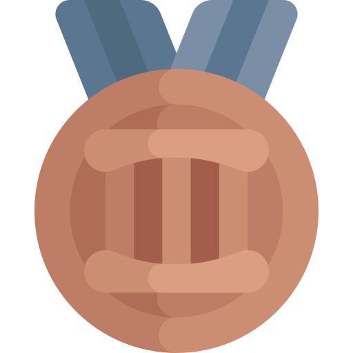

Visual Effects
Using nerfies you can create fun visual effects. This Dolly zoom effect would be impossible without nerfies since it would require going through a wall.
We present CODE-VISION, a benchmark designed to evaluate the logical understanding and reasoning capabilities of Multimodal Large Language Models (MLLMs) through code generation.
CODE-VISION challenges MLLMs to generate a correct program that fulfills specific functionality requirements based on a given flowchart, which visually represents the desired algorithm or process.
CODE-VISION comprises three subsets—HumanEval-V, Algorithm, and MATH—which evaluate MLLMs' reasoning abilities across basic programming, algorithmic, and mathematical problem-solving domains.
| Model | HumanEval-V | Algorithm | MATH | Avg. | |||||||
|---|---|---|---|---|---|---|---|---|---|---|---|
| Easy | Medium | Hard | Overall | Easy | Medium | Hard | Overall | ||||
| Proprietary Models | |||||||||||
| GPT-4o | 94.5 | 91.1 | 89.3 | 79.3 | 87.9 | 100.0 | 97.5 | 77.5 | 92.0 | 91.5 | |
| Gemini 1.5 Pro (May 2024) | 89.6 | 88.9 | 72.0 | 44.8 | 71.8 | 95.6 | 92.5 | 57.5 | 82.4 | 81.3 | |
| Claude 3.5 Sonnet 20240620  | 82.3 | 84.4 | 77.3 | 48.3 | 73.8 | 97.8 | 95.0 | 52.5 | 82.4 | 79.5 | |
| Claude 3 Sonnet | 53.0 | 31.1 | 14.7 | 3.4 | 17.4 | 88.9 | 72.5 | 17.5 | 60.8 | 43.7 | |
| Claude 3 Haiku | 48.8 | 22.2 | 4.0 | 0.0 | 8.7 | 73.3 | 62.5 | 12.5 | 50.4 | 37.0 | |
| Gemini 1.5 Flash (April 2024) | 72.0 | 40.0 | 32.0 | 10.3 | 30.2 | 86.7 | 72.5 | 20.0 | 60.8 | 57.1 | |
| Open-source Models | |||||||||||
| Llama-3.2-11B-Vision-Instruct | 29.3 | 8.9 | 1.3 | 0.0 | 3.4 | 62.2 | 27.5 | 2.5 | 32.0 | 23.8 | |
| Llama-3.2-90B-Vision-Instruct | 40.9 | 17.8 | 8.0 | 0.0 | 9.4 | 80.0 | 75.5 | 15.0 | 57.6 | 36.9 | |
| Phi-3-vision-128k-instruct | 29.3 | 15.6 | 4.0 | 0.0 | 6.7 | 35.6 | 7.5 | 2.5 | 16.0 | 19.6 | |
| Phi-3.5-vision-instruct | 28.0 | 8.9 | 0.0 | 0.0 | 2.7 | 33.3 | 7.5 | 0.0 | 14.4 | 17.7 | |
| MiniCPM-V 2.6 | 40.2 | 22.2 | 9.3 | 0.0 | 11.4 | 46.7 | 15.0 | 2.5 | 22.4 | 27.8 | |
| Qwen-VL-Plus | 17.1 | 11.1 | 0.0 | 0.0 | 3.4 | 13.3 | 2.5 | 0.0 | 5.6 | 11.7 | |
Using nerfies you can create fun visual effects. This Dolly zoom effect would be impossible without nerfies since it would require going through a wall.
As a byproduct of our method, we can also solve the matting problem by ignoring samples that fall outside of a bounding box during rendering.
We can also animate the scene by interpolating the deformation latent codes of two input frames. Use the slider here to linearly interpolate between the left frame and the right frame.

Start Frame

End Frame
Using Nerfies, you can re-render a video from a novel viewpoint such as a stabilized camera by playing back the training deformations.
There's a lot of excellent work that was introduced around the same time as ours.
Progressive Encoding for Neural Optimization introduces an idea similar to our windowed position encoding for coarse-to-fine optimization.
D-NeRF and NR-NeRF both use deformation fields to model non-rigid scenes.
Some works model videos with a NeRF by directly modulating the density, such as Video-NeRF, NSFF, and DyNeRF
There are probably many more by the time you are reading this. Check out Frank Dellart's survey on recent NeRF papers, and Yen-Chen Lin's curated list of NeRF papers.
@article{park2021nerfies,
author = {Park, Keunhong and Sinha, Utkarsh and Barron, Jonathan T. and Bouaziz, Sofien and Goldman, Dan B and Seitz, Steven M. and Martin-Brualla, Ricardo},
title = {Nerfies: Deformable Neural Radiance Fields},
journal = {ICCV},
year = {2021},
}